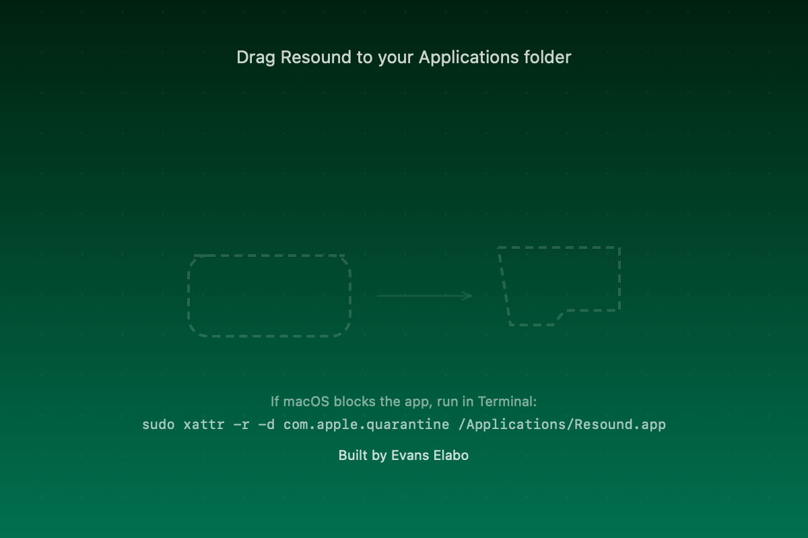

01
Dynamic Island pill
Collapsed now-playing state expands on hover into transport controls and track details.
Resound brings a Dynamic Island-style now-playing controller to Mac: artwork, waveform motion, playback controls, hotkeys, and a quiet menubar presence.
Requires macOS Sonoma or later. Works with Spotify and Apple Music.

Resound stays out of the dock and gives music controls a dedicated place at the top of the screen, close to where your attention already lands.
Collapsed now-playing state expands on hover into transport controls and track details.
Reads playback state from Spotify and Apple Music using native macOS scripting hooks.
Shows album art, elapsed time, remaining time, and an at-a-glance progress bar.
Choose between compact visualizers that make the pill feel alive without taking over.
Bind play, pause, next, previous, and island toggle shortcuts from the settings panel.
Quick controls live in a real macOS status menu with settings and quit always available.
Download the DMG, move the app to Applications, and clear quarantine if macOS flags the unsigned build.
sudo xattr -r -d com.apple.quarantine /Applications/Resound.app
# Build from source
git clone https://github.com/ellaboevans/resound-dynamic-island.git
cd resound-dynamic-island
make releaseResound is intentionally narrow: a fast Mac utility for music presence and control.
No. The island can still sit at the top of the screen on Macs without a notch.
Spotify and Apple Music are supported by the current app integration.
No. The release app is configured as a menubar utility with no dock icon.
Yes. Settings include left, center, and right placement plus adjustable notch width.